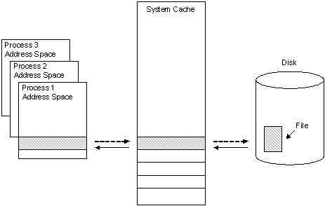

By default, Windows caches file data that is read from disks and written to disks. This implies that read operations read file data from an area in system memory known as the system file cache, rather than from the physical disk. Correspondingly, write operations write file data to the system file cache rather than to the disk, and this type of cache is referred to as a write-back cache. Caching is managed per file object.
Caching occurs under the direction of the cache manager, which operates continuously while Windows is running. File data in the system file cache is written to the disk at intervals determined by the operating system, and the memory previously used by that file data is freed—this is referred to as flushing the cache. The policy of delaying the writing of the data to the file and holding it in the cache until the cache is flushed is called lazy writing, and it is triggered by the cache manager at a determinate time interval. The time at which a block of file data is flushed is partially based on the amount of time it has been stored in the cache and the amount of time since the data was last accessed in a read operation. This ensures that file data that is frequently read will stay accessible in the system file cache for the maximum amount of time.
This file data caching process is illustrated in the following figure.

As depicted by the solid arrows in the previous figure, a 256 KB region of data is read into a 256 KB cache "slot" in system address space when it is first requested by the cache manager during a file read operation. A user-mode process then copies the data in this slot to its own address space. When the process has completed its data access, it writes the altered data back to the same slot in the system cache, as shown by the dotted arrow between the process address space and the system cache. When the cache manager has determined that the data will no longer be needed for a certain amount of time, it writes the altered data back to the file on the disk, as shown by the dotted arrow between the system cache and the disk.
The amount of I/O performance improvement that file data caching offers depends on the size of the file data block being read or written. When large blocks of file data are read and written, it is more likely that disk reads and writes will be necessary to finish the I/O operation. I/O performance will be increasingly impaired as more of this kind of I/O operation occurs.
In these situations, caching can be turned off. This is done at the time the file is opened by passing FILE_FLAG_NO_BUFFERING as a value for the dwFlagsAndAttributes parameter of CreateFile. When caching is disabled, all read and write operations directly access the physical disk. However, the file metadata may still be cached. To flush the metadata to disk, use the FlushFileBuffers function.
The frequency at which flushing occurs is an important consideration that balances system performance with system reliability. If the system flushes the cache too often, the number of large write operations flushing incurs will degrade system performance significantly. If the system is not flushed often enough, then the likelihood is greater that either system memory will be depleted by the cache, or a sudden system failure (such as a loss of power to the computer) will happen before the flush. In the latter instance, the cached data will be lost.
To ensure that the right amount of flushing occurs, the cache manager spawns a process every second called a lazy writer. The lazy writer process queues one-eighth of the pages that have not been flushed recently to be written to disk. It constantly reevaluates the amount of data being flushed for optimal system performance, and if more data needs to be written it queues more data. Lazy writers do not flush temporary files, because the assumption is that they will be deleted by the application or system.
Some applications, such as virus-checking software, require that their write operations be flushed to disk immediately; Windows provides this ability through write-through caching. A process enables write-through caching for a specific I/O operation by passing the FILE_FLAG_WRITE_THROUGH flag into its call to CreateFile. With write-through caching enabled, data is still written into the cache, but the cache manager writes the data immediately to disk rather than incurring a delay by using the lazy writer. A process can also force a flush of a file it has opened by calling the FlushFileBuffers function.
File system metadata is always cached. Therefore, to store any metadata changes to disk, the file must either be flushed or be opened with FILE_FLAG_WRITE_THROUGH.
Â
Â